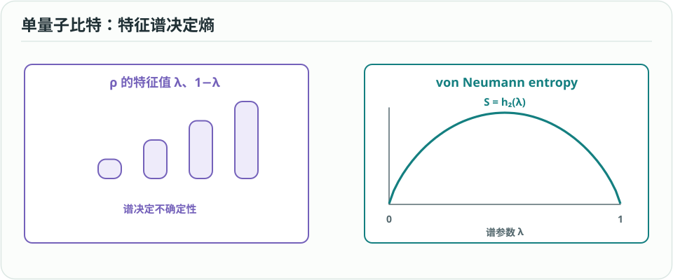
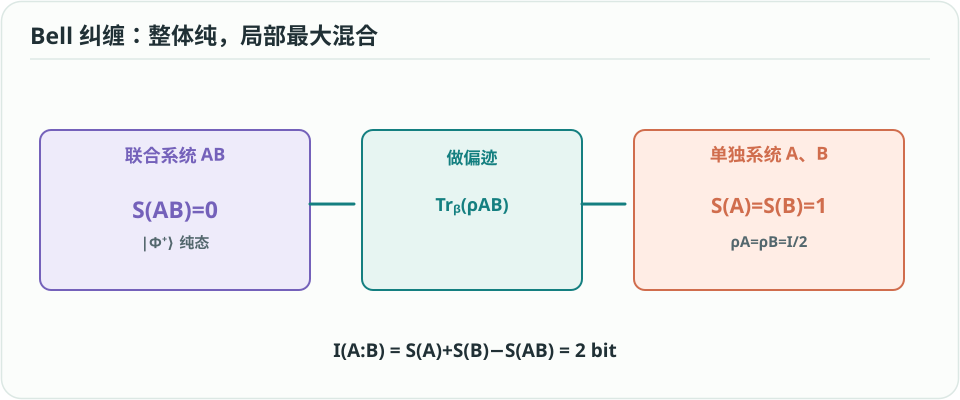
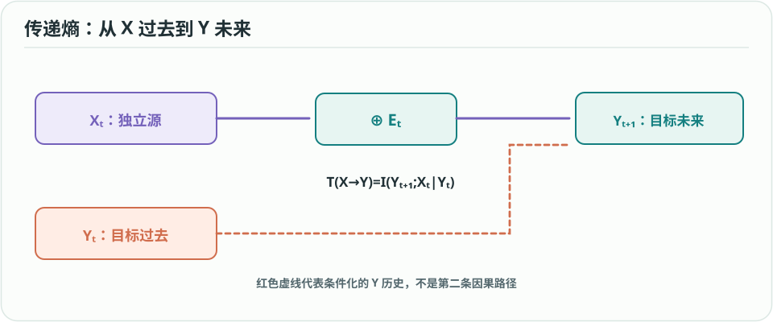
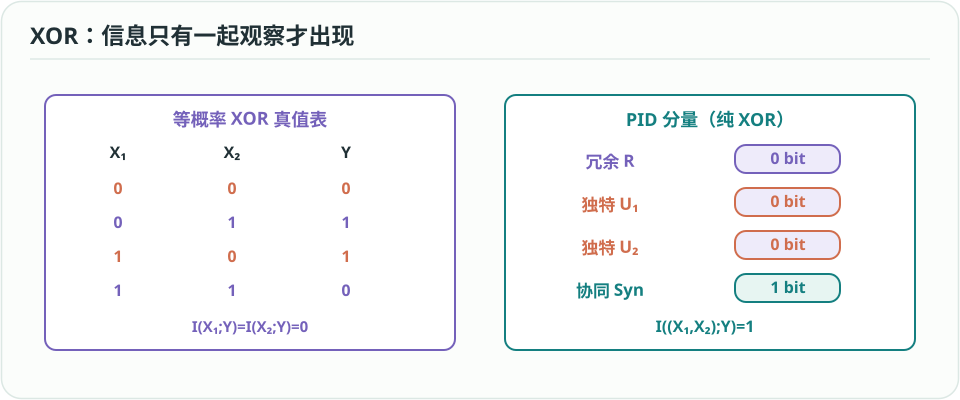
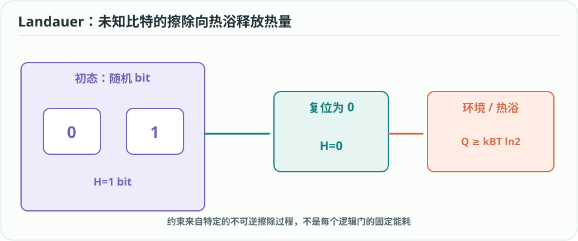

为什么“信息”可以进入量子与时间序列？
熵并不只属于压缩文件。它更一般地量化状态的不确定性与可区分性；互信息也不仅关乎两个变量的相关性，而与预测、纠缠、网络资源和多变量交互有关。但每走入一个新领域，都必须先定义数据类型、观测权限和概率结构：量子态不是经典概率表，传递熵不是因果发现算法，三变量交互信息也不会自动给出唯一的冗余/协同分解。
以下四个方向围绕同一个方法展开：先建立最小模型，再写定义，接着计算可复现的小例子，最后说明哪些结论无法自动推广到真实系统。
von Neumann 熵：密度矩阵的谱
经典概率分布可表示为一组非负且和为 1 的概率。量子系统的状态由密度算符 ρ 描述：它是 Hermitian、半正定、迹为 1 的矩阵。纯态满足 ρ=|ψ⟩⟨ψ| 且 Tr(ρ²)=1；一般混合态的纯度低于 1。不要把量子叠加与经典混合视为同一事物。
von Neumann 熵是：
其中 λᵢ 为 ρ 的特征值，约定 0 log 0=0。纯态的特征谱是 (1,0,…)，熵为 0；d 维最大混合态 I/d 的特征值全为 1/d，熵为 log₂d。密度矩阵在某个基底上非对角并不意味着熵一定更高：von Neumann 熵仅依赖特征谱，任何酉基变换都保持它不变。

纯态 λ=0 或 1 时熵为 0；λ=0.5 的最大混合态熵为 1 bit。这里的熵不是一次测量必然获得的通信比特数。
纠缠态：联合纯，局部却最大混合
考虑 Bell 态 |Φ⁺⟩=(|00⟩+|11⟩)/√2。整体两量子比特系统 AB 是纯态，因此 S(ρAB)=0；但对 B 做偏迹，A 的约化密度矩阵是 ρA=I/2，同样 ρB=I/2，各自熵为 1 bit。量子互信息定义为：
Bell 态由此有 I(A:B)=1+1−0=2 bit，而不是负互信息。这个 2 bit 是量子态的总相关性度量，不能解释为“不借助其他资源，只发送一个 qubit 就能免费携带两 bit 经典消息”。

Holevo 界与经典信息的可提取性
若发送者用经典变量 X 选择量子态 ρₓ（出现概率 pₓ），接收端允许对量子系统做测量得到经典结果 M，那么可提取的经典互信息满足 Holevo 界：
对没有预先共享纠缠的单个 d 维系统，χ 不超过 log₂d；一个未预共享纠缠的 qubit 由此最多提供 1 bit 的可访问经典信息。但若通信双方预先共享一个纠缠对，超密编码可通过发送一个 qubit 传递 2 bit 经典消息；额外可用的纠缠资源改变了资源模型，并不违反 Holevo 定理。
量子纠错码也必须遵循量子测量与不可克隆约束：不能简单把经典的“多复制几份多数投票”直接当作量子纠错。实际研究还区分 entanglement fidelity、logical error rate、代码距离及噪声模型。对于本章，最重要的是厘清经典 bit、qubit、纠缠资源与测量信息的计量口径。
传递熵：定向预测信息，而非因果证明
互信息 I(X;Y) 关于 X、Y 对称，不包含先后时序。Schreiber 的传递熵则考察：预测目标 Y 的未来时，在已经给定 Y 自身历史后，源 X 的过去能提供多少额外信息。对一步 Markov 版本：
为了获得可解析示例，令源 Xₜ 每时刻独立等概率取 0 或 1；目标满足 Yₜ₊₁ = Xₜ ⊕ Eₜ，噪声 Eₜ∼Bernoulli(q) 独立于所有源与过去噪声。此时源历史与目标历史独立，直接得到 T(X→Y)=1−h₂(q)，反方向 T(Y→X)=0。

Xₜ i.i.d. 等概率、独立的 BSC 噪声、单步历史。零反向 TE 是该模型的解析结果，而非一般时序数据结论。
实际因果问题中存在共同驱动 Z、潜在变量、反馈、时序聚合、非平稳性和观测噪声。未经控制的 TE 既可能夸大非因果关联，也可能漏掉复杂时延下的作用。若要进行因果论证，需要额外的因果图、条件化变量、干预或明确的可识别性假设；“TE 检测出信息流，所以 X 导致 Y”不是有效推理。
PID：为何 XOR 只有协同信息？
设两个公平且独立的输入 bit X₁、X₂，目标是 Y=X₁⊕X₂。知道 X₁ 或 X₂ 其中任何一个，都无法预测 Y（条件分布仍各半），于是 I(X₁;Y)=I(X₂;Y)=0；两者合起来却精确决定 Y，因此 I((X₁,X₂);Y)=1 bit。这 1 bit 完全来自协同：信息只存在于联合观察中。

部分信息分解（PID）试图将两个源对一个目标的联合互信息拆成冗余 R、两个独特分量 U₁/U₂ 和协同 Syn。在采用非负四分量的 PID 框架且公理适当时，XOR 的 R=U₁=U₂=0、Syn=1；若引入翻转噪声 Y=X₁⊕X₂⊕E，且 E 独立、翻转概率 q，则纯协同分量为 1−h₂(q)。
仅对独立等概率 X₁、X₂ 与独立二元噪声的 XOR 模型；一般 PID 的冗余项不是由这一个等式唯一确定的。
Williams 与 Beer 的 PID 框架明确提出了冗余、独特和协同的多源分解；但不同冗余公理/泛函会对复杂分布给出不同原子值。因此，不能把某一 PID 估计器算出来的“协同比例”当作无模型条件的物理事实。
信息与能量：Landauer 不是零成本计算定理
Landauer 原理讨论的是信息擦除的热力学成本。当一个未知且等概率的经典比特从两个逻辑状态重置为固定状态时，逻辑熵减少 ln 2（自然对数单位），理想可逆、准静态、与温度 T 热浴接触的操作需要至少将相应热量排给环境：

该式不能推广成“所有计算操作都消耗 kBT ln2”。可逆计算的理论极限与实际电路开关、漏电、有限速度和纠错开销是不同问题；当状态已知或允许不同的操作条件时，下界也要调整。Landauer 热力学约束不意味着传递熵可以当作真实能量流来直接相加。
四个方向的边界条件
- 量子熵只由密度矩阵的特征谱决定；Bell 态的局部熵与联合熵可以完全不同。
- Holevo 界约束经典信息的测量可提取量；声称每 qubit 只能发 1 bit 时必须注明没有预共享纠缠的资源模型。
- TE 是条件预测增益，不等于干预因果效应；需要控制共同驱动和时序混杂。
- PID 的冗余/协同量依赖所选分解公理；XOR 是明确且易复算的协同示例。
- Landauer 原理限制特定不可逆擦除过程，不能据此推断每个逻辑门的固有耗能。
来源与延伸阅读
- J. Preskill, Quantum Computation lecture notes：密度矩阵、互信息、Holevo 界与量子通信资源。
- Preskill, Accessible Information / Holevo Bound：χ 与测量可获取的经典信息。
- T. Schreiber (2000), Measuring Information Transfer：传递熵的原始定义。
- P. L. Williams & R. D. Beer (2010), Nonnegative Decomposition of Multivariate Information：PID 冗余、独特与协同信息。
- Bérut et al. (2012), Experimental Verification of Landauer's Principle：单比特擦除热耗散的实验结果。